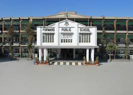

Welcome to Forward Public School, Hayatabad. Our school is dedicated to providing quality education in a safe, disciplined, and friendly environment. We believe that education is the key to success and personal growth. Our aim is to develop confident, responsible, and knowledgeable students who can contribute positively to society.
Dear Students and Parents,
Welcome to Forward Public School, Hayatabad. Our mission is to provide excellent educational opportunities that encourage academic achievement, creativity, and character development. We strive to create an environment where students can learn, grow, and achieve their full potential.
We believe that every child is unique and capable of success. Through dedicated teachers, modern teaching methods, and strong moral values, we prepare students for future challenges and opportunities.
Thank you for being a part of our educational journey.
Principal
Forward Public School